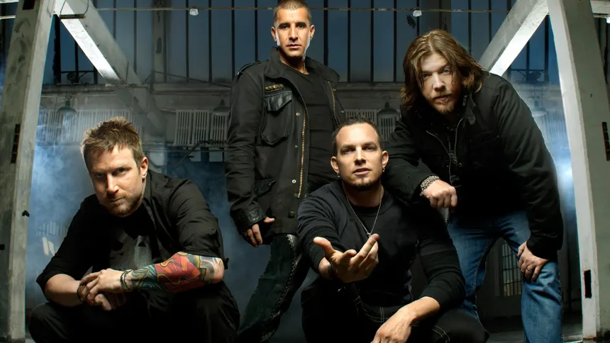
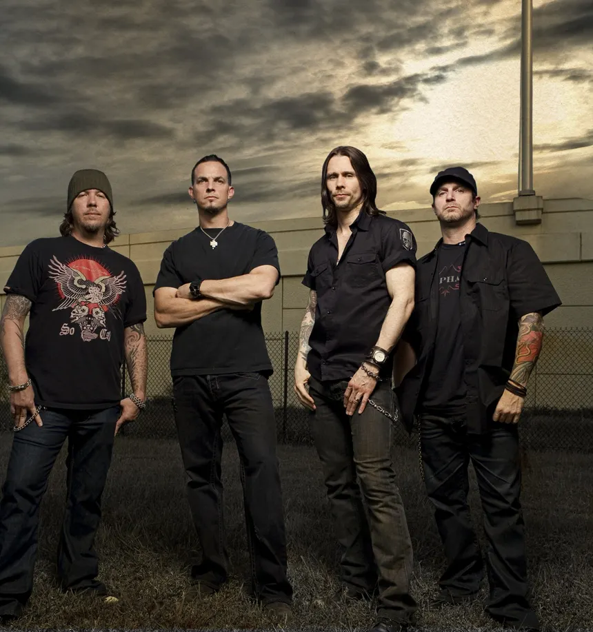
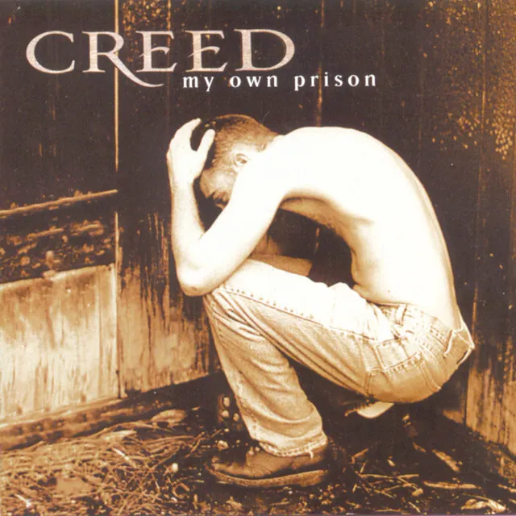

A paternidade e a esperança
SOBRE A MÚSICA
Significado e conexão com o público
Significado
A música With Arms Wide Open da banda Creed, escrita por Scott Stapp inspirado pela gravidez de sua esposa, fala sobre a descoberta de que o eu lírico será pai e sobre os sentimentos e as mudanças que essa nova etapa da vida traz.
Mensagem
A música transmite uma mensagem de amor, esperança e responsabilidade, mas ao mesmo tempo uma certa insegurança como no trecho “Well I don't know if I'm ready / To be the man I have to be” (Bem, eu não sei se estou pronto para ser o homem que preciso ser), mostrando seu lado mais humano com a importância de receber uma nova vida e estar preparado para o futuro.
Conexão emocional
A canção pode despertar emoções como alegria, medo, ansiedade e carinho, permitindo que pessoas que vivenciaram grandes mudanças na vida se identificarem com os sentimentos expressos na letra, principalmente as que já se tornaram ou sonham em se tornar pais um dia, é uma fase complicada e de muitas responsabilidades, pois estamos trazendo um novo ser ao mundo, mas apesar da insegurança, essa nova etapa também traz esperança e um significado maior para as nossas vidas, nos dando mais um motivo para continuar lutando e nos tornar pessoas melhores.
SCOTT STAPP
Vocalista e criador da banda
Sobre Scott
Anthony Scott Flippen, nascido em 8 de agosto de 1973, é um músico e cantor norte-americano, conhecido principalmente por ser o vocalista da banda Creed, que fundou ao lado de seu amigo Mark Tremonti. Ao longo de sua carreira, Stapp ganhou reconhecimento por sua voz marcante. Inicialmente, seu estilo vocal era frequentemente comparado ao de Eddie Vedder, vocalista da banda Pearl Jam. Com o passar do tempo, porém, ele consolidou sua própria identidade musical, destacando-se por seu timbre grave e expressivo nas canções do Creed, assumindo a posição de 68º como o melhor vocalista de heavy metal de todos os tempos pela revista Hit Parader.
Carreira solo
Scott Stapp iniciou sua carreira solo em 2005, após o Creed entrar em hiato em 2004. Nesse mesmo ano, lançou seu primeiro álbum solo, The Great Divide, que alcançou números expressivos de vendas. Posteriormente, lançou Proof of Life em 2013 e The Space Between the Shadows em 2019, dando continuidade à sua trajetória musical fora da banda. Em 2024, apresentou Higher Power, seu quarto álbum solo, reforçando sua presença no cenário do rock, especialmente nos estilos pós-grunge e rock cristão contemporâneo.
Art of Anarchy
Em maio de 2016, Scott Stapp passou a integrar o supergrupo Art of Anarchy, assumindo o posto de vocalista após a morte de Scott Weiland. A formação era composta também por Ron “Bumblefoot” Thal, John Moyer e pelos irmãos Jon e Vince Votta. Em março de 2017, o grupo lançou o álbum The Madness, que combina elementos do hard rock melódico com letras de caráter autobiográfico, marcando uma nova etapa na carreira musical de Stapp.
UM POUCO SOBRE A BANDA
Conhecendo o creed
Criação

Formada em 1994 na cidade de Tallahassee, capital da Flórida nos Estados Unidos e originalmente idealizada pelos amigos Scott Stapp e Mark Tremonti, Creed é uma banda de post-grunge e uma das maiores da história do rock, fazendo muito sucesso no final dos anos 90 e inicio dos anos 2000, principalmente entre os jovens graças as suas músicas com belos dedilhados, boa acústica, uma distorção impecável e letras profundas que retratavam os sentimentos humanos. Seus integrantes são Scott Phillips (o baterista), Scott Stapp (o vocalista), Mark Tremonti (o guitarrista) e Brian Marshall (o baixista).
Conquistas

Seu primeiro disco intitulado "My Own Prison" foi lançado em 1997 e vendeu mais de 5 mil cópias em menos de uma semana, sendo patrocinado pelos próprios integrantes da banda no começo, custando 6 mil dólares e 4 sendo apenas do pai de Brian Marshall, o baixista. Isso foi bastante para chamar atenção da gravadora Wind-Up Records, que logo assinou o contrato com a banda e o disco foi restaurado digitalmente, vendendo 50 mil cópias logo na primeira semana o que chamou a atenção de muitos críticos na época. A banda é um dos maiores vendedores de discos da história nos Estados Unidos e internacionalmente, seus três primeiros álbuns (contando com My Own Prison) estão entre os discos mais vendidos de todos os tempos nos Estados Unidos e foi eleita pela Billboard como a melhor banda dos anos 2000, onde disputou com cerca de 18 artistas.
Conexão com a religião?

Apesar de negarem esse rótulo, a banda teve forte associação a religião, especialmente com o Cristianismo devido a suas letras, imagens bíblicas e temas espirituais em musicas como higher, my own prison e a própria with arms wide open. Isso se deve ao fato do vocalista Scott Stapp ter crescido em uma familia pentecostal e ser cristão, mesmo se descrevendo como um "cristão em rebelião" durante sua fase na banda. Apesar disso, o próprio Scott disse em entrevista que sentia uma conexão com Deus, sentia o Espírito Santo quando escrevia as letras e cantava.